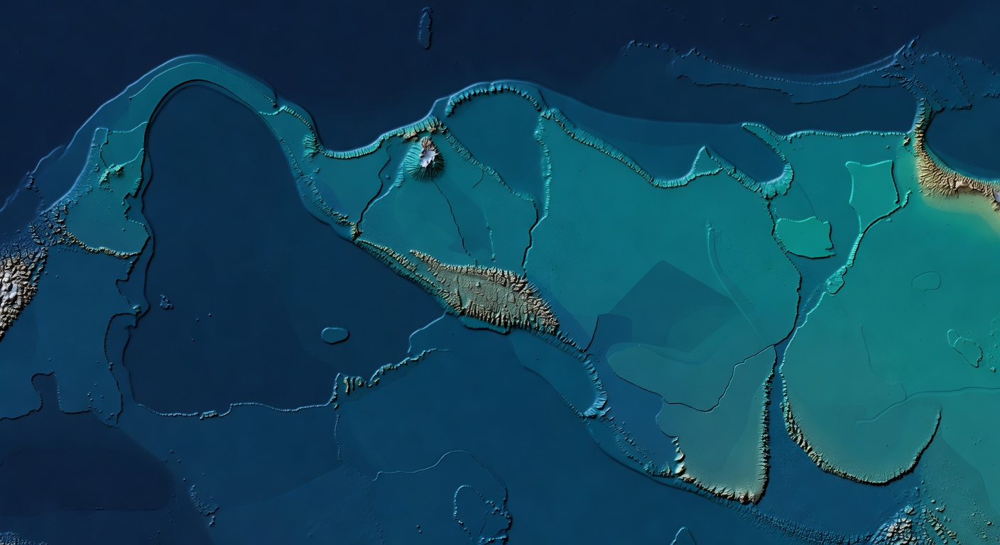

Founded in 2000, FGPS has spent 25 years developing the only software suite dedicated exclusively to seismic survey navigation processing and quality control. Every line of code written from a surveyor's perspective — because it was.
FGPS was founded in 2000 by Paul Dowd, a marine seismic surveyor who had spent two decades watching the industry try to adapt general-purpose tools for the specific, demanding requirements of seismic navigation processing.
The problem was not a lack of software — it was that none of the available tools had been built by people who understood what seismic positioning actually required. Hydrographic tools were adapted. In-house scripts were patched together. The result was errors, delays, and a persistent uncertainty about whether the data was correct.
Paul built the first version of SeisPos himself, from scratch, informed by years of processing real survey data across every major contractor fleet. That foundation — purpose-built from day one — is what still differentiates every FGPS product today.
Paul Dowd establishes FGPS and releases the first version of SeisPos — the only navigation processing tool built exclusively for seismic surveys. Early adoption across several major contractors validates the approach.
P1Tools, SeisBin, SeisPlan, SPSPro, and FBComp are developed and released. FGPS establishes itself as the specialist software provider for seismic navigation — used by most of the world's leading geophysical contractors.
Robin Pellatt — a seismic navigation specialist with deep field experience — joins FGPS as Senior Developer. The team expands its development capacity and deepens its technical capability across the full product suite.
The software suite is continuously refined based on direct feedback from field and office users. FGPS introduces support for IOGP P1/11 and P2/11 formats as the industry transitions from legacy UKOOA standards.
FGPS launches SeisCloudNAV — a cloud-based platform for real-time navigation QC delivered through the browser. For the first time, E&P companies, contractors, and consultants can all monitor live navigation data simultaneously, minutes after acquisition.
FGPS is deliberately small. Our users speak directly to the people who built the software — not to a support tier.
Founder & Lead Developer
Marine seismic surveyor turned software developer. More than 45 years in the seismic industry. Founded FGPS in 2000 with the conviction that the right tools had to be built by people who had actually been on the back deck of a seismic vessel.
Senior Developer
Seismic navigation specialist with extensive field and processing experience. Joined FGPS in 2011 and has contributed to every major product release since. Core developer behind SeisCloudNAV and the IOGP P1/11 format implementations.
The values that have guided FGPS for 25 years — and that still govern every product decision we make.
We do one thing: seismic navigation software. We do not do hydrographic surveys. We do not bolt navigation onto bigger platforms. Single focus produces deeper expertise.
Every feature in every FGPS product has been informed by real survey data and real user feedback. If it fails in the field, we hear about it — because our users call us directly.
FGPS is not owned by a contractor, a conglomerate, or an investment fund. Our independence is structural, not cosmetic. Our loyalty is to our users and to the accuracy of the data they produce.
We do not simplify algorithms to make software easier to sell. We build tools that are precise, because precision is what matters when vessel time costs more than most annual budgets.
Many of our users have been with FGPS for fifteen years or more. We are not trying to maximise seat count — we are trying to remain the best tool available for the surveyors who need us.
The industry evolves — new acquisition geometries, new formats, new standards. FGPS evolves with it. SeisCloudNAV is the most visible example of a 25-year-old company embracing a fundamentally new approach.
The best way to understand FGPS is to talk to us. We are a small team and we take every enquiry personally.
Direct line: +44 (0) 7793 611 932